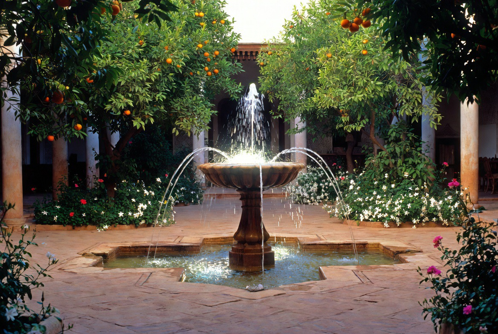
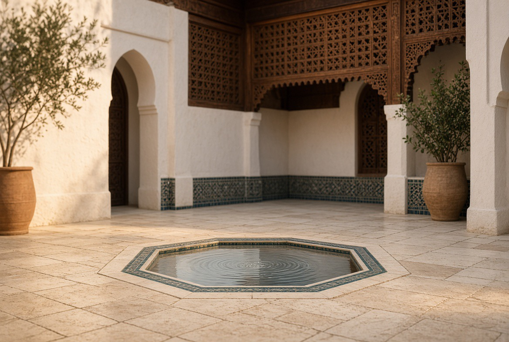
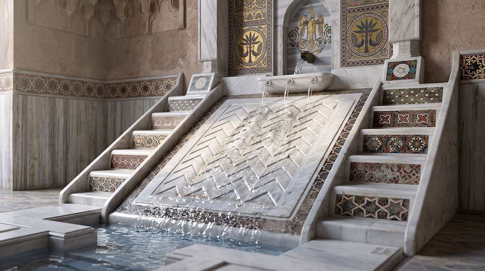
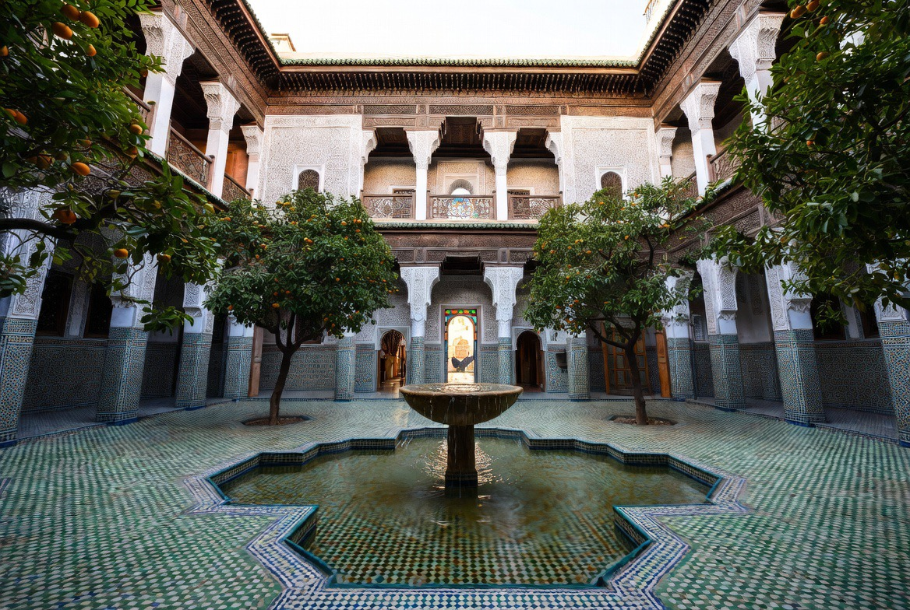
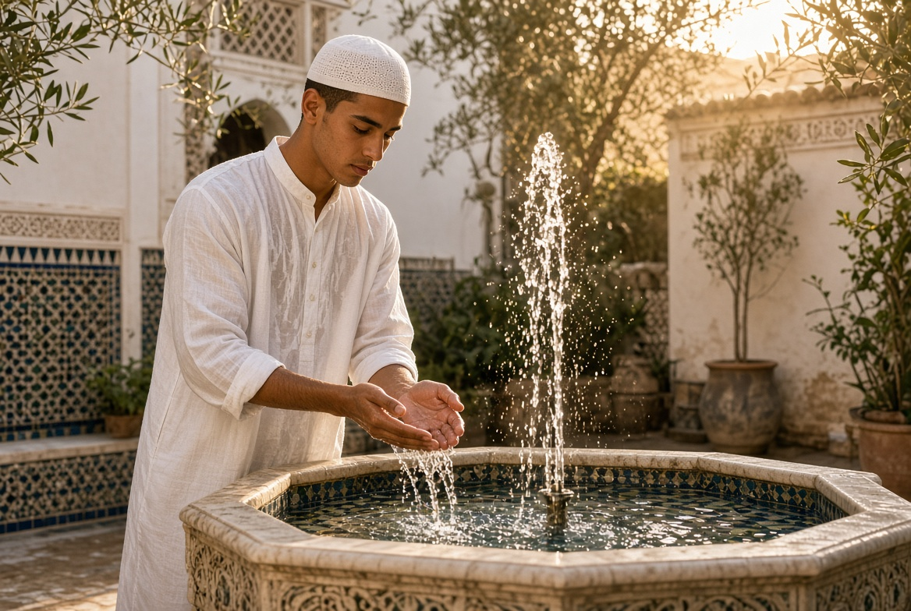
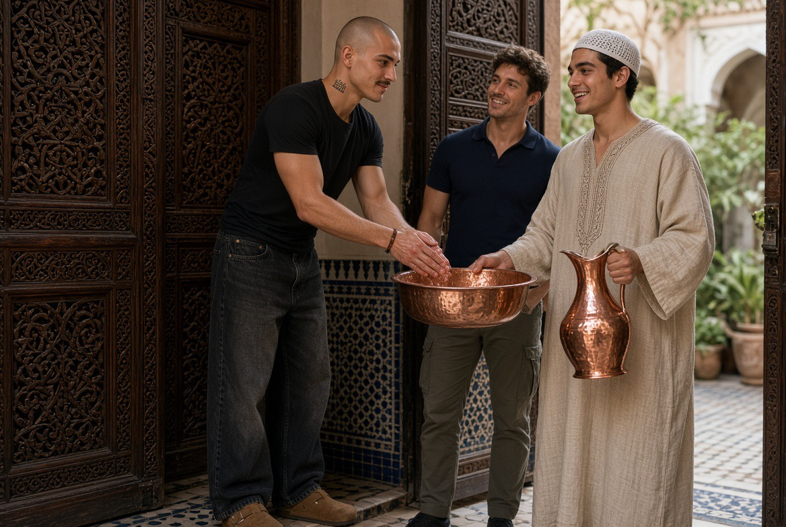
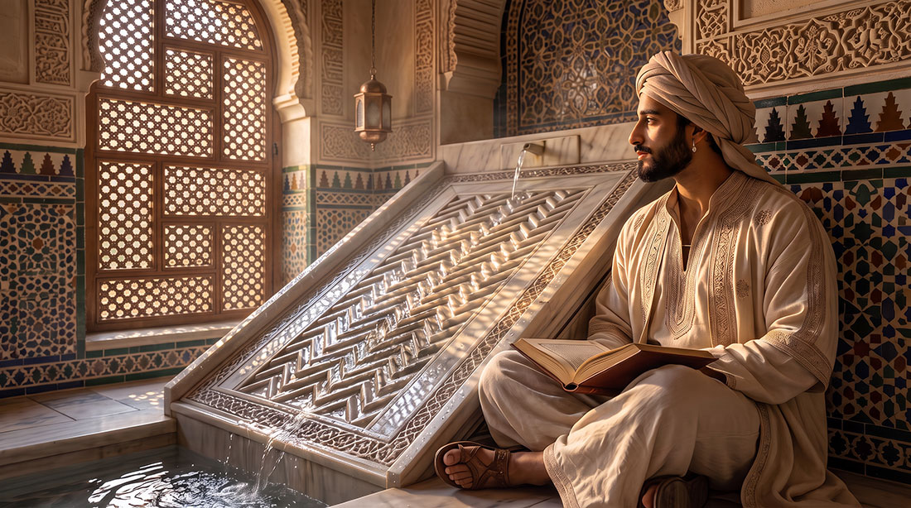

Water: use and symbol
Flush-set fountain, rills, reflection and coolness — water as a principle of order and of life.

In the Maghrebi and Andalusian world, water is never merely utilitarian. It structures space, regulates climate, marks thresholds and carries an ancient symbolic charge: the four channels of the chahar bagh evoke the four rivers of paradise; the flush-set fountain, at the centre of the patio, offers the reflection of the sky and the murmur that accompanies conversation.
The khettaras — underground drainage galleries inherited from Persian and Berber techniques — allowed, for centuries, water to be carried to oases and gardens without mechanical pumping. At the Riad, the water of the patio and the garden takes up this same logic of measure: visible, present, never wasted.
Daily use and symbol converge: to purify oneself, to cool oneself, to contemplate. Water remains the house's first gesture of hospitality.
Devices at the Riad

Flush-set fountain
At the centre of the patio, flush with the ground. Reflection of the sky, discreet murmur, anchoring point of the courtyard — heir to the fisqiya (فسقية) of Arabo-Andalusian houses: a basin flush with the ground, rather than a sloping blade like the salsabīl, designed to maximise the surface of water exposed to the air and so cool the whole patio through evaporation. Its most accomplished expression is found at the Patio de los Leones and the Patio de la Acequia of the Alhambra of Granada — two courtyards where water, set flush with the ground, becomes an air-conditioner before it is an ornament.

Rills & salsabil
Measured surface circulation of water. The salsabīl (سلسبيل) — a blade of water over stone — cools the air and paces the gaze, without ostentation. A particularly pure expression of it can be found at the Palazzo della Zisa in Palermo, where the blade of water still runs down the sloping stone of the great hall.

Garden basins
Reserve and presence. Water nourishes the citrus trees and aromatic plants; it extends into the garden the same principle as in the patio.

Purification & hospitality
Before prayer, before receiving guests: water is the first gesture. Not a decoration, but a daily practice of the house.

The gesture of welcome
To every guest who crosses the threshold, the house offers this same gesture that water makes possible: hands washed with rose water, poured from an ibriq into a ṭisht, even before the first word is exchanged. This is not a formality: it is a purification as much as a welcome, an ancient custom of Arab hospitality in which scented water always preceded the meal and the conversation.
At the Riad, this gesture remains the first contact between the house and the one it receives — before the shade of the patio, before the tea, water comes first.

Water in song
In Andalusian poetry, water is never a merely technical element: it is a motif in its own right, as worthy of being sung as the face of a beloved. No one expressed this with more finesse than Ibn Khafāja (450–533 AH / 1058–1138), a poet of Jazīrat Shuqr nicknamed by literary tradition shāʿir al-ṭabīʿa al-awwal fī al-Andalus — the first poet of nature in Andalusian land. His entire body of work returns endlessly to the same wonder: a garden, a river, a spring, described with the same tenderness one would reserve for a beloved face.
لِلَّهُ نَهرٌ سالَ في بَطحاءِ
أَشهى وُروداً مِن لِمى الحَسناءِ
مُتَعَطِّفٌ مِثلَ السِوارِ كَأَنَّهُ
وَالزَهرُ يَكنُفُهُ مَجَرُّ سَماءِ
“May God bless this river flowing through the valley — its approach more delightful than the moist lips of a beauty. It winds like a bracelet; ringed with flowers, one would take it for the Milky Way itself.”
— Ibn Khafāja, Dīwān
What the poet sees in his river — the curve, the reflection, the coolness that borders beauty — is the same thing the architect of the riad seeks to enclose within a basin of a few square metres: not water as a resource, but water as presence, as silent company that accompanies the gaze and calms the step. The thread of water that runs over the zellige of Riad Al-Uns is no different, in its intention, from the river that Ibn Khafāja sang from his native Jazīrat Shuqr — only reduced to the scale of a house rather than a kingdom.
The terms on this page are gathered in the glossary of the house.